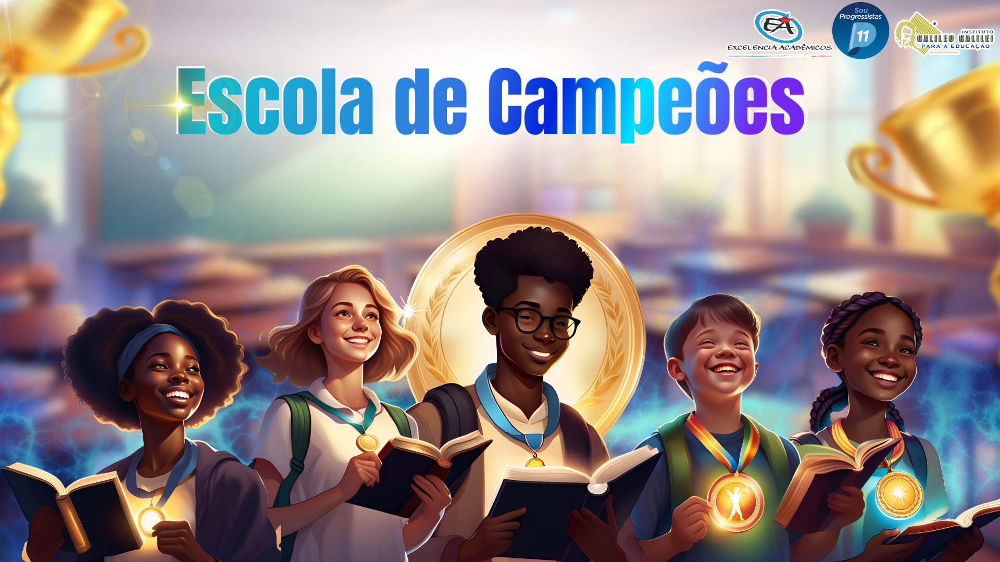
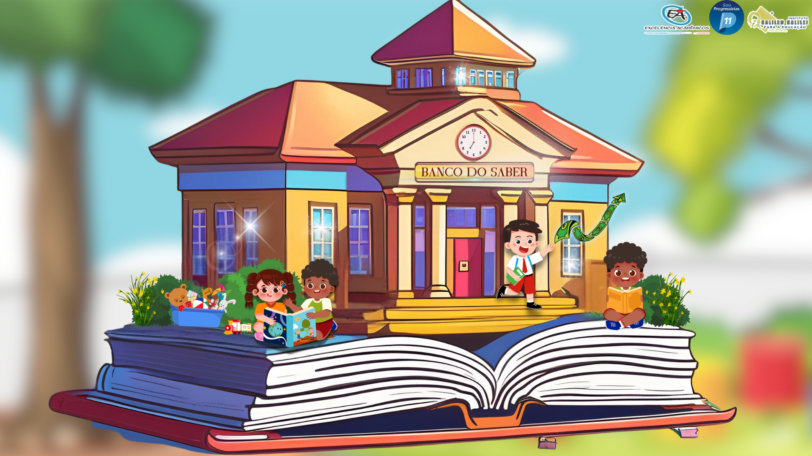
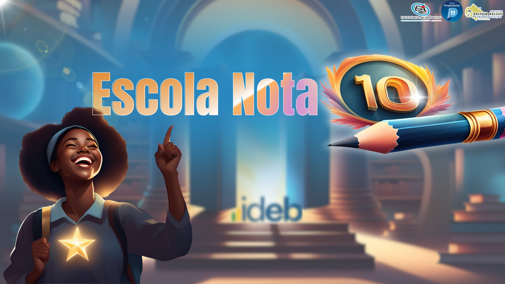
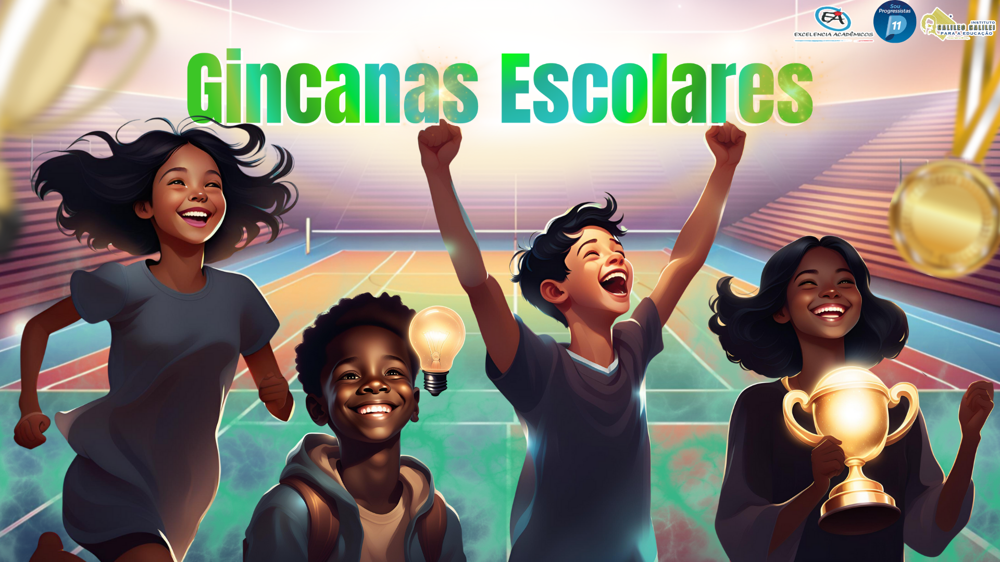
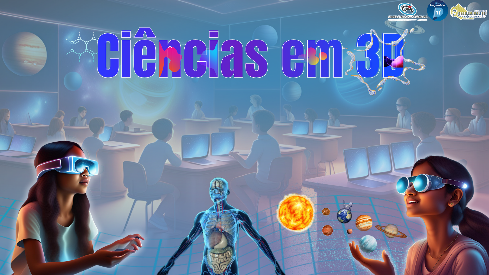

📚 Escola de Campeões – Voltado para o fortalecimento do desempenho acadêmico, incentivando a superação de desafios e o protagonismo estudantil.
🏛 Banco do Saber – Um sistema inovador de valorização do aprendizado por meio de uma moeda social, estimulando o esforço, a participação e o bom comportamento.
🌟 Escola Nota 10 – Reconhece e premia instituições de ensino com alto IDEB, promovendo uma cultura de excelência e aprimoramento contínuo.
🏆 Gincanas Escolares – Atividades lúdico-competitivas que integram diversas disciplinas e habilidades, fomentando a colaboração, o espírito de equipe e a inclusão.
🔬 Ciências em 3D – Iniciativa que alia tecnologia e experimentação para tornar o ensino de Ciências mais interativo, prático e imersivo.
Com um olhar inovador para o futuro da educação, o Soluções Interligadas de Tecnologia Educacional proporciona um ambiente de ensino mais estimulante e alinhado às necessidades do século XXI. As identidades visuais dos programas mencionados estão dispostas a seguir, reforçando a identidade e a unidade desta grande iniciativa educacional. 🚀📖✨